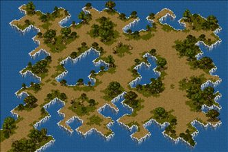
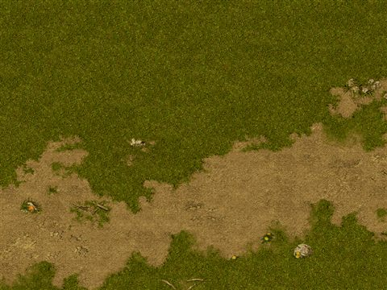
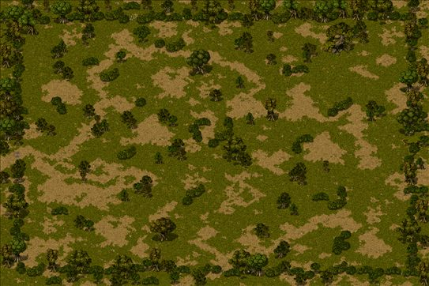
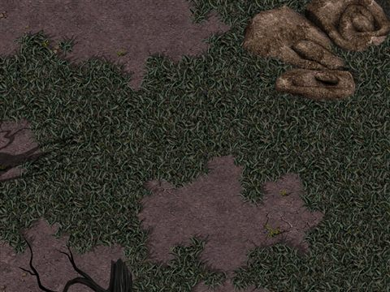

怪
依地圖看怪物
共 520 張地圖／頁面，依最低怪物等級排序。

妖獸窟10Lv 1～71
寶箱（紅）1寶箱（金）1妖貓70賽可妖貓70血腥妖貓71
妖獸窟13Lv 1～77
寶箱（金）1血腥妖貓71獵人妖貓73魔界村德姆耳環77
妖獸窟2Lv 1～60
寶箱（紅）1班點帕吉60
妖獸窟3Lv 1～64
寶箱（紅）1班點帕吉60幽靈鬼箱64
妖獸窟4Lv 1～64
寶箱（紅）1寶箱（金）1幽靈鬼箱64
妖獸窟6Lv 1～66
寶箱（紅）1寶箱（金）1西多利66

妖獸窟9Lv 1～70
寶箱（紅）1寶箱（金）1星星69麥尼亞克70



斯歐米森6Lv 1～50
波特-［寶箱波特］-札德-寶箱（淺茶）1［波特］5波恩傑奇10［波恩傑奇］10寶箱波特25波恩騎士40［波恩騎士］40札斯特45波特波特50［波波］50菁英摩斯50
斯歐米森7Lv 1～45
寶箱（深褐）1棕毛地鼠5摩斯戰士10惡夜摩斯40［絨毛鼠］45
斯歐米森8Lv 1～10
寶箱（深褐）1摩斯5棕毛地鼠5［棕毛地鼠］5波特5摩斯戰士10比比白猴10
海賊村地城1Lv 1～35
寶箱（深褐）1寶箱（淺茶）1比比白猴10［比比猴貝貝］10比比猴猴35［比比猴猴］35夏豔之猴35［夏豔之猴］35
海賊村地城2Lv 1～60
寶箱（淺茶）1寶箱（紅）1小螃蟹25［小螃蟹］25小海螺40［小海螺］40森巴之猴45［森巴之猴］45吉他手之猴45［吉他手之猴］45怪樹人45［怪樹人］45猜拳螃蟹60［猜拳螃蟹］60
海賊村地城3Lv 1～80
寶箱（金）1小海螺40猜拳螃蟹60海盜魚怪60潛艇海螺70拉蒂梅利亞75海馬騎士80海馬法師80

盧亞斯森3Lv 1～45
［普普洛布］-［迪德］-［泰德］-［泰諾爾］-［扎德］-［扎斯特］-寶箱（淺茶）1普普羅布5迪斯10普羅特17［普洛德］17達伊特17伐木諾肯20迪斯特25［迪斯特］25泰諾爾35達伊特倫35［泰特隆］35札德35札斯特45

盧亞斯森6Lv 1～99
寶箱（淺茶）1諾肯25［諾肯］25諾肯突襲35［諾肯突襲］35YOYO諾肯35［蓋諾肯］35札德35諾肯叔叔40［諾肯叔叔］40札斯特45漢德諾肯45［漢德諾肯］45尼克諾肯50［尼克諾肯］50伐木諾肯60［木諾肯］60高地守衛99

米魯里斯森5Lv 1～45
寶箱（淺茶）1哥布林17［哥布林］17普拉可25［普拉科］25漢德哥布林35［漢德哥布林］35哥布林騎士40［哥布林騎士］40惡夜摩斯40［惡夜摩斯］40佩利哥布林45［佩利哥布林］45

米魯里斯森6Lv 1～50
寶箱（淺茶）1艾亞格20阿傑特羅20弗薩姆20普拉可25［普拉科］25哥布林騎士40［哥布林騎士］40佩利哥布林45［佩利哥布林］45亞魔克50［亞蒙克］50羅德哥布林50［羅德哥布林］50
米魯里斯森7Lv 1～40
普普羅布-絨毛鼠-［絨毛鼠］-寶箱（深褐）1摩斯戰士10普羅特17［惡夜摩斯］40
米魯里斯森8Lv 1～10
寶箱（深褐）1摩斯5棕毛地鼠5波特5摩斯戰士10［摩斯戰士］10比比白猴10


魔窟10Lv 1～52
寶箱（淺茶）1雷德吉亞52皮塔52
魔窟11Lv 1～54
寶箱（淺茶）1波特51雷德吉亞52德雷薩52科托莫52卡門塔54
魔窟13Lv 1～55
寶箱（淺茶）1亞茲魔55


魔窟4Lv 1～48
寶箱（深褐）1達斯特45帽靈48
魔窟5Lv 1～50
寶箱（深褐）1帽靈48花瓶50


怪物城堡3Lv 5～99
普羅布5迪斯8達伊特16札德30［梅薩林］70［杜皮拉麋鹿］70［布羅尼北極熊］70［普洛德］99［迪斯特］99［泰特隆］99［扎斯特］99［迪斯凱帝］99獨眼怪99瘋狂獨眼怪99安迪爾斯獨眼怪99夢魘99白日夢99智者99［暴龍之尾］99死亡使者99高地人（黑）99
活動「歡迎來到黑摸的樂園」Lv 5～45
黑摸蓬澤基-黑摸南瓜頭5黑摸懷基貝貝10黑摸艾因35黑摸曼德拉35黑摸巨型奇奇45
新手課程Lv 10～30
普普羅布10摩斯兵卒16比比白猴30棕毛地鼠30
活動「2008年盧亞斯王公認狩獵大賽」Lv 10～80
軍事貝貝10軍事啾60軍事凱提70軍事暴龍80
活動「5週年☆大狩獵大賽」Lv 10～100
寶箱-軍事貝貝10軍事啾60軍事凱提70軍事暴龍80擬態怪100
海賊要塞入口Lv 10～10
岩石10藥草10
海賊要塞待機處Lv 10～10
岩石10藥草10
艾德隧道1Lv 10～10
吉納斯蝙蝠-蝙蝠10海灣蜥蜴10
艾德隧道2Lv 10～10
巴巴牙蜥蜴-公牛蜥蜴-純白蜥蜴10

魯克西翁森6Lv 17～99
［庫納］-［內德帕姆］-札德-［瘋狂獨眼怪］-［奈特梅爾］-庫娜17克雷吉蒙布林格25內德帕姆40札斯特45安迪爾斯獨眼怪45迪斯凱帝50夢魘65絕望之語99
兒童課程Lv 20～59
獵人摩斯20摩斯騎士24守衛摩斯（召喚）25守衛摩斯26惡夜摩斯32摩斯船長40獨眼怪56克雷吉蒙布林格57安迪爾斯獨眼怪58夢魘59

公會城地城4Lv 27～99
切斯曼騎士-波恩騎士27梅杜莎99格林卡德曼99石蝙蝠99嘴巴蠟燭99
卡雷瓦拉森2Lv 30～99
米斯蒂30波恩騎士40波特波特50德洛雷68伊亞拉73西耶拉73娜塔莉73帕梅拉73貝蒂73拉娜73凱特99
卡雷瓦拉森3Lv 30～99
迪斯凱帝-札斯特-札德-米斯蒂30伊亞拉73西耶拉73德洛雷73娜塔莉73帕梅拉73貝蒂73拉娜73凱特99
卡雷瓦拉森4Lv 30～99
羅德哥布林-哥布林騎士-米斯蒂30伊亞拉73西耶拉73德洛雷73娜塔莉73帕梅拉73貝蒂73拉娜73凱特99

草原地帶1Lv 30～70
小梅馬德30貪婪小梅馬德40劍齒虎40強力小梅馬德50貪婪梅馬德媽媽50貪婪劍齒虎50強大梅馬德媽媽60強大劍齒虎60凶猛梅馬德媽媽70
草原地帶2Lv 30～60
小梅馬德30貪婪小梅馬德40梅馬德媽媽40劍齒虎40強力小梅馬德50貪婪梅馬德媽媽50貪婪劍齒虎50強大梅馬德媽媽60強大劍齒虎60
活動「恐怖的南瓜！？萬聖節派對２００９」Lv 31～71
南瓜士兵31南瓜騎士51南瓜王71
夢見之塔1Lv 35～36
河童35黃色木芥子36
夢見之塔2Lv 35～37
小河童35紅色木芥子36傀儡37
怪物城堡2Lv 35～99
綠色彩珠35紅色彩珠45橙色彩珠55黃色彩珠65劍雪怪（藍）70劍雪怪（黃）70［劍雪怪］70槍雪怪（黃）70槍雪怪（紅）70［槍雪怪］70靛色彩珠75石榴石波特80祖母綠波特關85藍色彩珠85黃玉箱子波特90藍寶石波特騎士95紫色彩珠95鑽石波特波特99七海賤豪（黑）99殺戮魔瓜(黑)99精英摩斯（黑）99高地人（黑）99亡命之徒(黑)99死亡冠軍斯米爾（黑）99
標準課程Lv 35～67
波恩騎士-波特波特35血櫻蝸牛41夏豔之猴43尼克諾肯48皮塔52閃魂蝸牛66西多利66斯摩迪67哈丁巴67
活動「怪物襲擊」Lv 35～120
櫻花河童35幽靈木偶36夜叉狐38演舞傀儡70暗天狗面具70暗黑武士115萬年夜叉120億年夜叉120
盧亞斯森5Lv 35～60
諾肯突襲35YOYO諾肯35札德35諾肯叔叔40［諾肯叔叔］40札斯特45漢德諾肯45［漢德諾肯］45尼克諾肯50［尼克諾肯］50伐木諾肯60
艾德隧道最深處Lv 35～71
突變蝙蝠35突變海灣蜥蜴36突變公牛蜥蜴37蜥蜴王71
魔界村森5Lv 35～60
［曼德果拉］-［賽可魔瓜］-曼德拉草35斯皮羅50［斯皮羅］50萬聖節南瓜50［萬聖節南瓜］50賽可魔瓜60
夢見之塔3Lv 36～37
藍色木芥子36傀儡37血色傀儡37
活動「從怪物手中奪回GM的祕密！」Lv 36～70
海兵Jr36海盜Jr36小丑Jr37波恩騎士38絨毛鼠48亞魔克58波特70
夢見之塔4Lv 38～58
敏捷的狐狸38黃天狗面具48紅武者58
夢見之塔5Lv 38～58
狡猾的狐狸38黃天狗面具48藍武者58
海賊村地城4Lv 40～80
小海螺40猜拳螃蟹60海盜魚怪60潛艇海螺70海馬騎士80海馬法師80
海賊村地城5Lv 40～80
小海螺40［小海螺］40猜拳螃蟹60［猜拳螃蟹］60海盜魚怪60［海盜魚怪］60潛艇海螺70［潛艇海螺］70海馬騎士80［海馬騎士］80海馬法師80
裡胡桃鉗區域5Lv 40～99
波恩騎士40格雷夫90歐律阿勒（黑）95布羅斯女巫95切斯曼騎士99嘴巴蠟燭99貝托斯凱洛斯99布雷克卡德曼99半人馬檸檬砲蛙車99斯忒諾99美杜莎99歐律阿勒（綠）99
遺跡地帶1Lv 40～60
貪婪小梅馬德40梅馬德媽媽40三角龍40強力小梅馬德50貪婪梅馬德媽媽50貪婪三角龍50兇猛小梅馬德60強大梅馬德媽媽60強大三角龍60
遺跡地帶2Lv 40～70
貪婪小梅馬德40三角龍40強力小梅馬德50貪婪梅馬德媽媽50貪婪三角龍50兇猛小梅馬德60強大梅馬德媽媽60強大三角龍60凶猛梅馬德媽媽70
勇者之墓Lv 46～71
靈魂獨眼怪46靈魂瘋狂獨眼怪47靈魂奈特梅爾48長老獨眼怪71
卵巢地帶1Lv 50～70
強力小梅馬德50梅馬德爸爸50蛋殼三角龍50兇猛小梅馬德60貪婪梅馬德爸爸60貪婪蛋殼三角龍60死亡小梅馬德70強力梅馬德爸爸70強力蛋殼三角龍70
卵巢地帶3Lv 50～90
蛋殼三角龍50健美齒虎60貪婪蛋殼三角龍60貪婪健美齒虎70貪婪飛天三角龍70強力健美齒虎80強力飛天三角龍80兇猛飛天三角龍90
卵巢地帶4Lv 50～80
強力小梅馬德50梅馬德爸爸50兇猛小梅馬德60貪婪梅馬德爸爸60飛天三角龍60死亡小梅馬德70強力梅馬德爸爸70貪婪飛天三角龍70強力飛天三角龍80
惡夢課程Lv 50～99
札斯特-札德-摩斯子彈50菁英摩斯50斯雷夏魔瓜75機械惡犬85夢饜狂犬85綠色機械惡犬85泰尼運輸者85圖尼射手85泰尼博克85圖尼85殺人南瓜99
愛麗絲區域1Lv 50～85
蠟燭斯內奇50格雷布檸檬砲蛙車50丘布檸檬砲蛙車50發條鼠70紅卡人85
愛麗絲區域2Lv 50～85
紅卡人50丘布檸檬砲蛙車50光輝斯凱洛斯50波格爾斯凱洛斯70珀普卡德曼85
愛麗絲區域3Lv 50～85
紅卡人50格雷布檸檬砲蛙車50十字斯凱洛斯50班克斯凱洛斯70布魯卡德曼85
愛麗絲區域4Lv 50～70
紅卡人50丘布檸檬砲蛙車50波特切斯曼50魯克切斯曼70
愛麗絲區域5Lv 50～70
格雷布檸檬砲蛙車50丘布檸檬砲蛙車50噴火燭妖50博爾格檸檬砲蛙車70
神之課程Lv 50～99
艾莉絲50法西內70博爾格檸檬砲蛙車80貝托斯凱洛斯99切斯曼騎士99布雷克卡德曼99斯忒諾99梅杜莎99歐律阿勒（綠）99
裡愛麗絲區域5Lv 50～60
艾莉絲50蠟燭斯內奇60噴火燭妖60光輝斯凱洛斯60十字斯凱洛斯60丘布檸檬砲蛙車60格雷布檸檬砲蛙車60紅卡人60波特切斯曼60
食蟲植物地圖1Lv 50～80
貪婪三角龍50強大劍齒虎60貪婪小劍齒虎60強大三角龍60凶猛劍齒虎70強大小劍齒虎70凶猛三角龍70死亡劍齒虎80凶猛小劍齒虎80
食蟲植物地圖2Lv 50～80
貪婪劍齒虎50強大梅馬德媽媽60貪婪梅馬德爸爸60強大劍齒虎60凶猛梅馬德媽媽70強力梅馬德爸爸70凶猛劍齒虎70死亡梅馬德媽媽80凶猛梅馬德爸爸80
食蟲植物地圖3Lv 50～80
凱森50強大梅馬德媽媽60貪婪梅馬德爸爸60貪婪小劍齒虎60凶猛梅馬德媽媽70強力梅馬德爸爸70強大小劍齒虎70死亡梅馬德媽媽80凶猛梅馬德爸爸80
食蟲植物地圖4Lv 50～90
貪婪三角龍50貪婪小劍齒虎60強大三角龍60強力梅馬德爸爸70強大小劍齒虎70凶猛三角龍70凶猛梅馬德爸爸80凶猛小劍齒虎80死亡梅馬德爸爸90
瘋狂者課程Lv 57～90
亨斯塔57幽暗鬼手68麥尼亞克70賽可妖貓70發條鼠70血腥妖貓71獵人妖貓73［死靈克斯塔］75帕迪亞克特氣球80嘴巴蠟燭90埃舒亞克特氣球90
夢見之塔6Lv 58～70
黑武者58紅天狗面具68千年夜叉70

卵巢地帶2Lv 60～80
健美齒虎60貪婪蛋殼三角龍60飛天三角龍60貪婪健美齒虎70強力蛋殼三角龍70貪婪飛天三角龍70強力健美齒虎80兇猛蛋殼三角龍80強力飛天三角龍80
火山地帶1Lv 60～99
強大三角龍60死亡小梅馬德70凶猛三角龍70強力蛋殼三角龍70死亡梅馬德媽媽80死亡三角龍80兇猛蛋殼三角龍80強力飛天三角龍80死亡劍齒虎80死亡梅馬德爸爸90死亡蛋殼三角龍90兇猛飛天三角龍90死亡小劍齒虎90死亡天使三角龍99死亡冠軍斯米爾99蒂拉諾99
火山地帶2Lv 60～99
強大劍齒虎60死亡小梅馬德70凶猛劍齒虎70強大小劍齒虎70死亡梅馬德媽媽80死亡三角龍80死亡劍齒虎80凶猛小劍齒虎80強力健美齒虎80死亡梅馬德爸爸90死亡蛋殼三角龍90死亡小劍齒虎90凶猛冠軍斯米爾90死亡天使三角龍99死亡冠軍斯米爾99蒂拉諾99
被遺忘的書房1Lv 60～70
大箱子60木製寶箱怪65白色寶箱怪70
被遺忘的藏書庫1Lv 60～82
積塵大箱60奇怪的掛鐘80萬卷之書82
裡愛麗絲區域1Lv 60～85
蠟燭斯內奇60噴火燭妖60光輝斯凱洛斯60十字斯凱洛斯60丘布檸檬砲蛙車60格雷布檸檬砲蛙車60波特切斯曼60紅卡人85
裡愛麗絲區域2Lv 60～85
蠟燭斯內奇60噴火燭妖60光輝斯凱洛斯60十字斯凱洛斯60丘布檸檬砲蛙車60格雷布檸檬砲蛙車60紅卡人60波特切斯曼60珀普卡德曼85
裡愛麗絲區域3Lv 60～85
蠟燭斯內奇60噴火燭妖60光輝斯凱洛斯60十字斯凱洛斯60丘布檸檬砲蛙車60格雷布檸檬砲蛙車60紅卡人60波特切斯曼60布魯卡德曼85
裡愛麗絲區域4Lv 60～60
蠟燭斯內奇60噴火燭妖60光輝斯凱洛斯60十字斯凱洛斯60丘布檸檬砲蛙車60格雷布檸檬砲蛙車60紅卡人60波特切斯曼60


Town/魔界村Lv 70～70
修鍊用赫蘇阿比70
亞空間Lv 70～95
奇蹟箱子（紅）70［哥斯特女僕］80［阿波莉娜］95
女兒節活動「守護櫻花村的女兒節！」Lv 70～70
憤怒的千年夜叉70
尼夫蘭德雪國Lv 70～70
梅薩林（紅）70梅薩林（黑）70［梅薩林］70杜皮拉麋鹿（紅）70杜皮拉麋鹿（黑）70［策比拉］70布羅尼北極熊（綠）70布羅尼北極熊（紅）70［布羅尼北極熊］70
尼普爾蘭雪園Lv 70～70
梅薩林（紅）70梅薩林（黑）70［梅薩林］70杜皮拉麋鹿（紅）70杜皮拉麋鹿（黑）70［策比拉］70布羅尼北極熊（綠）70布羅尼北極熊（紅）70［布羅尼北極熊］70
怪物城堡1Lv 70～99
冰霜貴族（藍）70冰霜貴族（紅）70［冰霜貴族］70緋紅摩斯70諾肯士兵85諾肯中士88諾肯軍官88諾肯上尉90［石蝙蝠］(白)93德斯艾（紅）93梅杜莎（橙）93諾肯市長95［石蝙蝠］(灰)96德斯艾（綠）96梅杜莎（黃）96諾肯上校98諾肯將軍99［石蝙蝠］(紅)99德斯艾（茶）99梅杜莎（綠）99[99]德姆皮亞斯部下99卡梅爾船長99惡夢中的艾莉絲99
格列佛區域1Lv 70～90
發條鼠70比夏普切斯曼70格魯姆檸檬砲蛙車70切斯曼騎士90丘布檸檬砲蛙車90
格列佛區域2Lv 70～90
比夏普切斯曼70格魯姆檸檬砲蛙車70波格爾斯凱洛斯70貝托斯凱洛斯90
格列佛區域3Lv 70～90
格魯姆檸檬砲蛙車70班克斯凱洛斯70珀普卡德曼70布雷克卡德曼90
格列佛區域4Lv 70～90
珀普卡德曼70比夏普切斯曼70魯克切斯曼70半人馬檸檬砲蛙車90
格列佛區域5Lv 70～90
比夏普切斯曼70格魯姆檸檬砲蛙車70博爾格檸檬砲蛙車70嘴巴蠟燭90
活動「6週年使節團來到神之領域」Lv 70～120
間諜706週年使節團120
海上孤島1Lv 70～110
小人海兵員70小人印地安70比比白猴105比比猴猴105夏豔之猴105森巴之猴105吉他手之猴105小螃蟹105猜拳螃蟹105小海螺105潛艇海螺105海盜魚怪105海馬騎士105海馬法師105夜之指揮官110
海上孤島2Lv 70～115
小人海濱員70小人印地安70夜之指揮官110機械惡犬115綠色機械惡犬115夢饜狂犬115泰尼運輸者115圖尼射手115圖尼115泰尼博克115海賊木桶115海賊船車115海賊槍手115大塔特勒115卡梅爾船長115
胡桃鉗區域1Lv 70～95
發條鼠70切斯曼騎士90斯忒諾90美杜莎90歐律阿勒（綠）90蠟燭斯內奇95
胡桃鉗區域2Lv 70～95
波格爾斯凱洛斯70貝托斯凱洛斯90斯忒諾90美杜莎90歐律阿勒（綠）90噴火燭妖95
胡桃鉗區域3Lv 70～95
班克斯凱洛斯70布雷克卡德曼90斯忒諾90美杜莎90歐律阿勒（綠）90發條鼠95
胡桃鉗區域4Lv 70～95
魯克切斯曼70半人馬檸檬砲蛙車90斯忒諾90美杜莎90歐律阿勒（綠）90嘴巴蠟燭95
胡桃鉗區域5Lv 70～95
博爾格檸檬砲蛙車70嘴巴蠟燭90斯忒諾90美杜莎90歐律阿勒（綠）90歐律阿勒（黑）95布羅斯女巫95
萊比亞鎮北部Lv 70～70
梅薩林（紅）70梅薩林（黑）70［梅薩林］70杜皮拉麋鹿（紅）70杜皮拉麋鹿（黑）70［策比拉］70
萊比亞鎮外Lv 70～70
梅薩林（紅）70梅薩林（黑）70［梅薩林］70杜皮拉麋鹿（紅）70杜皮拉麋鹿（黑）70
萊比亞鎮東北部Lv 70～70
梅薩林（紅）70梅薩林（黑）70［梅薩林］70杜皮拉麋鹿（紅）70杜皮拉麋鹿（黑）70［策比拉］70布羅尼北極熊（綠）70
裡格列佛區域5Lv 70～80
法西內70波格爾斯凱洛斯80班克斯凱洛斯80博爾格檸檬砲蛙車80格魯姆檸檬砲蛙車80發條鼠80珀普卡德曼80比夏普切斯曼80魯克切斯曼80
阿德里布恩10F迴廊Lv 70～95
冰塊（紫）70［伊克勒斯］（綠-弱）70奇蹟箱子（灰）70奇蹟箱子（紅）70［哥斯特女僕］80［馬凱拉］95［阿納坎］95［伊克勒斯］（綠-強）95
阿德里布恩6F迴廊Lv 70～95
冰塊（藍）70艾梅斯（藍）70奇蹟箱子（灰）70［哥斯特女僕］80馬凱拉（茶）95馬凱拉（紫）95
阿德里布恩7F迴廊Lv 70～95
伊克勒斯（紫-弱）70奇蹟箱子（灰）70奇蹟箱子（淺綠）70［哥斯特女僕］80馬凱拉（茶）95馬凱拉（紫）95［馬凱拉］95伊克勒斯（紫-強）95
阿德里布恩8F迴廊Lv 70～95
冰塊（茶）70艾梅斯（茶）70奇蹟箱子（茶）70奇蹟箱子（紅）70［哥斯特女僕］80馬凱拉（紫）95阿納坎（灰）95阿納坎（紅）95
阿德里布恩9F迴廊Lv 70～95
冰塊（綠）70伊克勒斯（黃-弱）70奇蹟箱子（紅）70奇蹟箱子（淺綠）70［哥斯特女僕］80馬凱拉（紫）95阿納坎（紅）95伊克勒斯（黃-強）95
阿德里布恩冰園Lv 70～70
梅薩林（紅）70梅薩林（黑）70［梅薩林］70杜皮拉麋鹿（紅）70杜皮拉麋鹿（黑）70［杜皮拉麋鹿］70布羅尼北極熊（綠）70布羅尼北極熊（紅）70［布羅尼北極熊］70
露台Lv 70～80
艾梅斯（藍）70艾梅斯（茶）70奇蹟箱子（紅）70［哥斯特女僕］80
東方鐵甲船1-2Lv 75～78
賽帕蟲75賽帕猴78
諾克斯要塞Lv 76～82
精英蟲76精英猴80金屬猴82


東方鐵甲船6-1Lv 78～88
金屬蟲78金屬皮格85金屬砲皮格88

亞泰歐房間Lv 80～99
劍雪怪（藍）80劍雪怪（黃）80［劍雪怪］80槍雪怪（紅）80［槍雪怪］80冰霜貴族（紅）99
吉哈姆的房間Lv 80～90
冰之女僕（藍）80格蘭帕伊斯（藍）90格蘭帕伊斯（紫）90［格蘭帕伊斯］90
呆歐斯房間Lv 80～99
劍雪怪（藍）80劍雪怪（黃）80［劍雪怪］80槍雪怪（黃）80槍雪怪（紅）80冰霜貴族（藍）99
地獄課程Lv 80～99
波恩騎士-海馬騎士80海馬法師83格雷夫90卡梅爾船長99高地守衛99絕望之語99
斯帕凱爾洛的房間Lv 80～99
劍雪怪（藍）80劍雪怪（黃）80槍雪怪（黃）80槍雪怪（紅）80［槍雪怪］80冰霜貴族（藍）99
普羅斯米房間Lv 80～99
劍雪怪（藍）80［劍雪怪］80槍雪怪（黃）80［槍雪怪］80冰霜貴族（藍）99
梅蕾德房間Lv 80～90
冰之女僕（藍）80格蘭帕伊斯（藍）90［格蘭帕伊斯］90

特里培房間Lv 80～99
劍雪怪（藍）80劍雪怪（黃）80槍雪怪（黃）80槍雪怪（紅）80冰霜貴族（藍）99
瑪拉房間Lv 80～90
冰之女僕（紫）80格蘭帕伊斯（藍）90格蘭帕伊斯（紫）90［格蘭帕伊斯］90

羅西的房間Lv 80～99
冰之女僕（藍）80冰之女僕（紫）80［女僕］80格蘭帕伊斯（藍）90格蘭帕伊斯（紫）90［格蘭帕伊斯］90冰霜貴族（紅）99［冰霜貴族］99
裡格列佛區域1Lv 80～90
波格爾斯凱洛斯80班克斯凱洛斯80博爾格檸檬砲蛙車80格魯姆檸檬砲蛙車80發條鼠80珀普卡德曼80比夏普切斯曼80魯克切斯曼80丘布檸檬砲蛙車90
裡格列佛區域2Lv 80～80
波格爾斯凱洛斯80班克斯凱洛斯80博爾格檸檬砲蛙車80格魯姆檸檬砲蛙車80發條鼠80珀普卡德曼80比夏普切斯曼80魯克切斯曼80
裡格列佛區域3Lv 80～80
波格爾斯凱洛斯80班克斯凱洛斯80博爾格檸檬砲蛙車80格魯姆檸檬砲蛙車80發條鼠80珀普卡德曼80比夏普切斯曼80魯克切斯曼80
裡格列佛區域4Lv 80～80
波格爾斯凱洛斯80班克斯凱洛斯80博爾格檸檬砲蛙車80格魯姆檸檬砲蛙車80發條鼠80珀普卡德曼80比夏普切斯曼80魯克切斯曼80

貝魯拉的房間Lv 80～99
冰之女僕（藍）80冰之女僕（紫）80格蘭帕伊斯（藍）90格蘭帕伊斯（紫）90［格蘭帕伊斯］90冰霜貴族（藍）99冰霜貴族（紅）99［冰霜貴族］99
里特的房間Lv 80～99
劍雪怪（藍）80劍雪怪（黃）80槍雪怪（紅）80［槍雪怪］80冰霜貴族（藍）99
阿塞拉的房間Lv 80～99
劍雪怪（藍）80劍雪怪（黃）80［劍雪怪］80槍雪怪（紅）80［槍雪怪］80冰霜貴族（紅）99
阿德里布恩1F迴廊Lv 80～80
劍雪怪（藍）80槍雪怪（黃）80槍雪怪（紅）80
阿德里布恩2F迴廊Lv 80～80
劍雪怪（藍）80劍雪怪（黃）80［劍雪怪］80槍雪怪（黃）80槍雪怪（紅）80［槍雪怪］80
阿德里布恩3F迴廊Lv 80～80
劍雪怪（藍）80劍雪怪（黃）80［劍雪怪］80槍雪怪（黃）80槍雪怪（紅）80［槍雪怪］80
阿德里布恩4F迴廊1Lv 80～90
冰之女僕（藍）80［女僕］80格蘭帕伊斯（藍）90格蘭帕伊斯（紫）90
阿德里布恩4F迴廊2Lv 80～90
冰之女僕（藍）80冰之女僕（紫）80格蘭帕伊斯（藍）90格蘭帕伊斯（紫）90
阿德里布恩4F迴廊3Lv 80～90
冰之女僕（藍）80冰之女僕（紫）80［女僕］80格蘭帕伊斯（藍）90格蘭帕伊斯（紫）90［格蘭帕伊斯］90
阿德里布恩4F迴廊4Lv 80～90
冰之女僕（藍）80冰之女僕（紫）80［女僕］80格蘭帕伊斯（藍）90格蘭帕伊斯（紫）90［格蘭帕伊斯］90
阿德里布恩4F迴廊5Lv 80～90
冰之女僕（藍）80冰之女僕（紫）80［女僕］80格蘭帕伊斯（藍）90格蘭帕伊斯（紫）90［格蘭帕伊斯］90
雅潔泰斯房間Lv 80～99
劍雪怪（藍）80劍雪怪（黃）80槍雪怪（黃）80槍雪怪（紅）80冰霜貴族（紅）99
雷卡房間Lv 80～99
劍雪怪（藍）80劍雪怪（黃）80槍雪怪（黃）80冰霜貴族（藍）99
魯培羅房間Lv 80～99
劍雪怪（藍）80劍雪怪（黃）80［劍雪怪］80槍雪怪（紅）80冰霜貴族（紅）99
黛瑪房間Lv 80～99
劍雪怪（藍）80［劍雪怪］80槍雪怪（黃）80槍雪怪（紅）80［槍雪怪］80冰霜貴族（藍）99


惡魔島2Lv 85～99
機械惡犬85綠色機械惡犬85夢饜狂犬85擬態怪99


惡魔島4Lv 90～99
海賊木桶90海賊船車90海賊槍手90擬態怪99
格亨納3樓監獄Lv 90～120
守衛塔90地獄三頭犬120骷髏騎士120黑暗賢者120
格亨納4樓監獄Lv 90～120
守衛塔90鋼鐵狂戰士120黑暗賢者120
格亨納5樓監獄Lv 90～120
守衛塔90地獄三頭犬120
石化區1區Lv 93～99
德斯艾（紅）93［石蝙蝠］(白)93德斯艾（茶）99
石化區2區Lv 93～99
［石蝙蝠］(白)93德斯艾（綠）96［石蝙蝠］(紅)99
石化區3區Lv 93～96
梅杜莎（橙）93梅杜莎（綠）96［石蝙蝠］(灰)96
安德倫Lv 95～95
投影石95投影的靈魂95
裡胡桃鉗區域1Lv 95～99
蠟燭斯內奇95切斯曼騎士99嘴巴蠟燭99貝托斯凱洛斯99布雷克卡德曼99半人馬檸檬砲蛙車99斯忒諾99美杜莎99歐律阿勒（綠）99
裡胡桃鉗區域2Lv 95～99
噴火燭妖95切斯曼騎士99嘴巴蠟燭99貝托斯凱洛斯99布雷克卡德曼99半人馬檸檬砲蛙車99斯忒諾99美杜莎99歐律阿勒（綠）99
裡胡桃鉗區域3Lv 95～99
發條鼠95切斯曼騎士99嘴巴蠟燭99貝托斯凱洛斯99布雷克卡德曼99半人馬檸檬砲蛙車99斯忒諾99美杜莎99歐律阿勒（綠）99
裡胡桃鉗區域4Lv 95～99
嘴巴蠟燭95切斯曼騎士99貝托斯凱洛斯99布雷克卡德曼99半人馬檸檬砲蛙車99斯忒諾99美杜莎99歐律阿勒（綠）99
鏡之空間1Lv 95～95
普路伊德-失去記憶的冒險者95席尼斯特95

石化區4區Lv 96～99
［石蝙蝠］(灰)96梅杜莎（黃）96德斯艾（茶）99［石蝙蝠］(紅)99達尼佰型改99

公會城地城1Lv 99～99
達斯特99亞茲魔99西多利99星星99麥尼亞克99
公會城地城2Lv 99～99
殘暴三角龍99沙漠蛋龍99霜凍蛋殼三角龍99廢墟天使三角龍99蒂拉諾99
公會城地城3Lv 99～99
機械惡犬99圖尼99海賊木桶99大塔特勒99卡梅爾船長99
公會城地城5Lv 99～99
［劍雪怪］99［槍雪怪］99［女僕］99［格蘭帕伊斯］99［冰霜貴族］99
女王之間Lv 99～99
赫利坎（黃）99赫利坎（紅）99［赫利坎］99塞德娜99
庫修隆獎勵３Lv 99～99
珍珠貝（藍）-海鬱金香 （橙）-嫉妒(藍)-吉恩特(紅)-戈爾刺魟-里帕圖（紫）-巴哈姆特99
怪物城堡4Lv 99～99
腦騎士99腦衛士99變形99潘朵拉之盒99肯比歐斯99微笑王99德萊弗守衛99斯潘納守衛99

寂靜路易斯2Lv 100～100
漣漪魔像-光之精靈100黑暗復仇者100堅硬魔像100

鏡之城廣場Lv 104～104
普魯魯特104凱爾羅米蒂104波克西104

悠久之森1Lv 105～110
漢德哥布林105佩利哥布林105羅德哥布林105諾肯105YOYO諾肯105諾肯突襲105諾肯叔叔105漢德諾肯105尼克諾肯105伐木諾肯105惡夜摩斯105摩斯船長105迪斯凱帝105緋紅摩斯110

童話夢魘1Lv 105～105
蠟燭斯內奇105噴火燭妖105發條鼠105嘴巴蠟燭105蛙砲105卡片人105布羅斯女巫105


帕爾塞斯1Lv 110～110
夏莫科(黃)110斯特納(綠)110
帕爾塞斯2Lv 110～110
夏莫科(藍)110斯特納(綠)110
帕爾塞斯3Lv 110～110
赤紅夏摩可110斯特納(黃)110
帕爾塞斯4Lv 110～110
斯特納（綠）110［斯特納］110安提拉凱農（綠）110
帕爾塞斯5Lv 110～110
斯特納（黃）110安提拉凱農（綠）110
帕爾塞斯6Lv 110～110
斯特納（紅）110安提拉加農砲（藍）110
帕爾塞斯7Lv 110～110
夏莫科（紅）110斯特納（紅）110安提拉加農砲（紅）110
帕爾塞斯獎勵3Lv 110～120
斯特納（紅）-斯特納（黃）110［斯特納］110安提拉加農砲（藍）110蘭瑟亞120
斯坎達倫1Lv 110～110
馬斯基普（藍）110［馬斯基普爾］110天空米格爾（綠）110
斯坎達倫2Lv 110～110
馬斯基普爾（綠）110［馬斯基普爾］110天空米格爾（綠）110

斯坎達倫4Lv 110～110
阿米倫（綠）110天空米格爾（綠）110［天空米格爾］110
斯坎達倫5Lv 110～110
天空米格爾（藍）110阿米倫（綠）110［阿米倫］110
斯坎達倫6Lv 110～110
天空米格爾（紅）110阿米倫（藍）110［阿米倫］110
斯坎達倫7Lv 110～110
馬斯基普爾（紅）110天空米格爾（紅）110阿米倫（藍）110
斯坎達倫獎勵1Lv 110～120
馬斯基普（藍）110［馬斯基普爾］110馬斯基普爾（綠）120天空米格爾（綠）120
冰之箱庭2Lv 115～120
馬凱拉115阿納坎115伊克拉斯115埃米斯115赫爾阿切克115冰霜貴族115入侵者120

時空迴廊2Lv 115～120
分身（戰士）115分身（武道家）115分身（魔法師）115分身（聖職者）115分身（盜賊）115分身（吟遊詩人）115分身（騎士）115詛咒騎士120詛咒守衛120
童話夢魘2Lv 115～120
死亡之眼115梅杜莎115斯潘納守衛115德萊弗守衛115致命葛蘭特120
荒廢礦坑2Lv 115～120
巴奇115班點帕吉115亨斯塔115幽暗鬼手115麥尼亞克115妖貓115血腥妖貓115獵人妖貓115［死靈克斯塔］115格拉諾雷克斯120

佛雷斯小徑1Lv 120～120
哥布林（獵人）120哥布林（樵夫）120哥布林（監工）120鼴鼠120
佛雷斯小徑2Lv 120～120
哥布林（士兵）120哥布林（術士）120草地鼴鼠120阿爾特雷姆120冠軍鼴鼠120

佛雷斯小徑4Lv 120～120
哥布林（狂戰士）120哥布林（劇毒師）120劇毒樹精120涅特雷姆120古代樹精120
克修倫1Lv 120～120
珍珠貝（白）120嫉妒（紅）120嫉妒（紫）120吉恩特（茶）120
克修倫2Lv 120～120
珍珠貝（白）120嫉妒（紅）120嫉妒（紫）120吉恩特（紫）120
克修倫3Lv 120～120
珍珠貝（紫）120［嫉妒］120吉恩特（茶）120三齒魨（橙）120戈爾刺魟(紅)120
克修倫4Lv 120～120
珍珠貝（紫）120海鬱金香（紫）120［嫉妒］120吉恩特（紫）120三齒魨（茶）120戈爾刺魟(茶)120
克修倫5Lv 120～120
珍珠貝（紅）120海鬱金香（藍）120嫉妒（藍）120［吉恩特］120［三齒魨］120里帕圖（紅）120
克修倫6Lv 120～120
珍珠貝（茶）120海鬱金香（紅）120吉恩特（紅）120［三齒魨］120［戈爾刺魟］120里帕圖（紫）120

因特原野Lv 120～120
哥布林（劇毒師）120哥布林（光戰士）120梅修雷姆120格拉姆120提艾露莉120拉艾爾120冷酷的哥布林120瘋狂的哥布林120兇暴的哥布林120
塞佩利歐1Lv 120～120
迪克雷斯工兵120艾爾庫魯克120迪諾洛克120暗影威爾利克120黑暗鎧甲120
塞佩利歐2Lv 120～120
死亡守衛120艾爾庫魯克120迪諾術士120暗影威爾利克120黑暗突擊者120繆津120

塞佩利歐4Lv 120～120
死亡守衛120迪諾術士120暗影威爾利克120繆津120暗影騎士120

塞佩利歐6Lv 120～120
暗影騎士120暗影幽靈120繆津120迪諾術士120巴索克120

塞佩利歐8Lv 120～120
菲利爾騎士120菲利爾鎚兵120暗影幻影120幻影騎士120迪奧特120
塞佩利歐斯帕提姆Lv 120～120
繆金（紫）120繆金（紅）120德爾梅提斯（藍）120德爾梅提斯（綠）120幻影騎士120菲利爾大師120迪奧特120血腥騎士120
威爾德小徑1Lv 120～120
哥布林（獵人）120哥布林（監工）120獅鷲120雷貓120
威爾德小徑2Lv 120～120
哥布林（術士）120哥布林（士兵）120拉歐露莉120赫哥獅鷲120艾爾獅鷲120


庫修隆獎勵１Lv 120～120
珍珠貝（白）-嫉妒(紫)-吉恩特（白）-特里奧頓-戈爾刺魟（紅）-海鬱金香120嫉妒(紅)120吉恩特（紫）120
戴莫尼翁1Lv 120～120
石像鬼的石像120石像鬼120邁爾元素120
戴莫尼翁2Lv 120～120
石像鬼的石像120克魯奧爾石像鬼120突變邁爾元素120

戴莫尼翁堡壘1Lv 120～120
戴莫尼翁水晶120暗黑奧貝爾120戴莫尼翁守衛120冥界墮天使女武神120
戴莫尼翁堡壘2Lv 120～120
戴莫尼翁水晶120暗黑奧貝爾120戴莫尼翁大師守衛120墮天使女武神120

戴莫尼翁神聖之門Lv 120～120
戴莫尼翁水晶120墮天使女武神領主120暗翼守護者120漆黑之闇德拉菲斯120
扭曲時間之間Lv 120～120
大魔術師露妮雅120
提爾歐1Lv 120～120
庫魯克120恩維120迪諾120暗影威爾利克120

提爾歐3Lv 120～120
恩維120梅基庫魯克120迪諾梅提斯120暗影威爾利克120
提爾歐4Lv 120～120
死亡工兵120梅基庫魯克120暗影幻影120黑暗鎧甲120
斯坎達倫獎勵2Lv 120～120
天空米格爾（綠）-馬斯基普爾（紅）120天空米格爾（藍）120［天空米格爾］120阿米倫（綠）120
斯坎達倫獎勵3Lv 120～120
安德拉斯-天空米格爾（藍）120天空米格爾（紅）120阿米倫（綠）120阿米倫（藍）120［阿米倫］120

格亨納2樓監獄Lv 120～120
泥人120狂信者120廢墟鳳凰120骷髏守衛120骷髏大師120

格亨納入口Lv 120～120
鋼鐵狂戰士120泥人120
格亨納陸橋Lv 120～120
廢墟鳳凰120

歐佩爾2Lv 120～120
寶箱（紅）120地獄之火（白）120地獄之火（綠）120烈焰之尾（紫）120
歐佩爾3Lv 120～120
寶箱（紫）120［地獄之火］120烈焰之尾（黑）120熔岩狂人（水）120炎岩追獵者（黃）120
歐佩爾4Lv 120～120
寶箱（紫）120熔岩之手（紅）120［地獄之火］120烈焰之尾（紫）120熔岩狂人（藍）120炎岩追獵者（茶）120
歐佩爾5Lv 120～120
寶箱（藍）120熔岩之手（藍）120地獄之火（紅）120［烈焰之尾］120［熔岩狂人］120火焰鳥（紅）120
歐佩爾6Lv 120～120
寶箱（綠）120熔岩之手（橙）120烈焰之尾（紅）120［熔岩狂人］120［炎岩追獵者］120火焰鳥（紫）120
歐佩爾7Lv 120～120
寶箱（橙）120熔岩之手（綠）120［地獄之火］（黑）120烈焰之尾（紅）120熔岩狂人（紫）120炎岩追獵者（紅）120［火焰鳥］120
歐費爾獎勵２Lv 120～120
寶箱(藍)-熔岩之手(藍)-地獄之火(綠)-熔岩狂人(藍)-火焰鳥(紅)-烈焰之尾(紫)120
活動「緊急狀況！！怪物大量出現！？」Lv 120～120
失落木質諾肯120失落盧涅亞120失落弗雷斯貝爾格120失落凱提獵人120失落海馬騎士120失落長老獨眼怪120失落梅薩林120失落暴龍120失落惡魔120失落艾德爾領主120
盧米納神殿1樓(魔王區)Lv 120～120
樹精120巨齒鯊砲120阿努比亞斯120阿瑟拉120
盧米納神殿碼頭Lv 120～120
阿努比亞斯120
莉希涅1Lv 120～120
哈比之卵120哈比120水元素120
莉希涅2Lv 120～120
哈比之卵120血之哈比120突變水之精靈120


莉希涅要塞1Lv 120～120
莉希涅守衛120羅剎聖天使女武神120莉希涅水晶120神聖服從120
莉希涅要塞2Lv 120～120
天使女武神120莉希涅大師衛士120莉希涅水晶120神聖服從120

蓋赫那5樓監獄(魔王區)Lv 120～120
鋼鐵狂戰士120泥人120廢墟鳳凰120緹亞潔120
諾拉克號Lv 120～120
樹精120

露米娜神殿1樓Lv 120～120
巨齒鯊砲120阿努比亞斯120烏爾修萊茵120
露米娜神殿2樓Lv 120～120
爬行貝120
露米娜神殿懺悔室1Lv 120～120
樹精120卡皮歐120
露米娜神殿懺悔室2Lv 120～120
卡皮歐120帕斯托爾120
露米娜神殿懺悔室3Lv 120～120
阿努比亞斯120
露米娜神殿懺悔室4Lv 120～120
卡皮歐120
露米娜神殿謁見之間1Lv 120～120
樹精120巨齒鯊砲120烏爾修萊茵120

露米娜神殿謁見之間3Lv 120～120
帕斯托爾120
冷酷的鏡之間1Lv 132～132
赤紅投影石132投影的靈魂132可疑的鏡子132束縛的靈魂132
冷酷的鏡之間2等級不明
被操控的冒險者-失去記憶的冒險者-可疑的鏡子-束縛的靈魂-投影石-投影的靈魂-凱爾羅米蒂-普魯魯特-波克西-黑暗孔雀-戴爾-
冷酷的鏡之間3等級不明
被操控的冒險者-怪物名稱-
帕爾塞斯獎勵1等級不明
夏莫科（黃）-夏莫科（藍）-［夏莫科］-斯特納（綠）-
帕爾塞斯獎勵1等級不明
夏莫科（黃）-夏莫科（藍）-［夏莫科］-斯特納（綠）-
帕爾塞斯獎勵2等級不明
夏莫科（紅）-斯特納（綠）-斯特納（黃）-［斯特納］-安提拉凱農（綠）-
幻想之間等級不明
失去記憶的冒險者-被操控的冒險者-黑暗索莫諾-黑暗孔雀-戴爾-
庫修隆獎勵２等級不明
珍珠貝(紅)-海鬱金香(藍)-嫉妒(紫)-吉恩特(紫)-三齒魨(茶)-里帕圖(紅)-
怪物入侵活動(2012.04)等級不明
？？？-
格亨納獎勵關1等級不明
寶箱-鋼鐵狂戰士-狂信者-泥人-廢墟鳳凰-地獄三頭犬-骷髏守衛-骷髏大師-


梅雨活動「明天請讓它放晴吧！」等級不明
紅魔導士-藍魔導士-綠魔導士-黃魔導士-黑魔導士-灰魔導士-
歐費爾獎勵１等級不明
寶箱(紅)-熔岩之手(白)-地獄之火(白)-地獄之火(綠)-烈焰之尾(黑)-烈焰之尾(紫)-熔岩狂人(水)-炎岩追獵者(黃)-
歐費爾獎勵３等級不明
寶箱(橙)-熔岩之手(綠)-地獄之火(紅)-烈焰之尾(紅)-炎岩追獵者(茶)-火焰鳥(紫)-沙羅曼達-
混沌之間等級不明
戴爾-
被遺忘的藏書庫2等級不明
大雷米克-恐怖的掛鐘-血染之書-
被遺忘的藏書庫3等級不明
恐怖的掛鐘-黑色寶箱怪-

鏡之城4等級不明
失去記憶的冒險者-被操控的冒險者-
鏡之城5等級不明
被操控的冒險者-斯溫德爾-皮布路羅-黑暗索莫諾-
鏡之城6等級不明
被操控的冒險者-
鏡之空間2等級不明
失去記憶的冒險者-席尼斯特-歐米諾斯-特里可-古路伊德-普路伊德-投影石-
鏡之空間4等級不明
失去記憶的冒險者-索路伊德-皮耶斯可-皮布路羅-斯溫德爾-索莫諾-凱爾羅米蒂-投影石-投影的靈魂-

露米娜獎勵關1等級不明
樹精-卡皮歐-阿努比亞斯-巨齒鯊砲-爬行貝-烏爾修萊茵-帕斯托爾-

Event/百鬼夜行/出現怪物壹之鬼～貳拾之鬼Lv 1～86
壹之鬼1貳之鬼4參之鬼8四之鬼11五之鬼14六之鬼17七之鬼21拾六之鬼40拾九之鬼42拾壹之鬼56拾五之鬼59八之鬼60九之鬼60拾貳之鬼60拾七之鬼60貳拾之鬼64拾八之鬼65拾之鬼70拾四之鬼70拾參之鬼86
Event/百鬼夜行升級/出現怪物Lv 1～1
鬼之守衛-零之鬼-白夜鬼-白夜石1
Quest/寶島/出現怪物Lv 1～90
克里莫拉克夏守護者（紅）-克里莫拉克夏守護者（黃）-怪鳥1野生猴子（桃）70野生猴子（灰）70野花70野鳥70哥布林兵（黃）70哥布林兵（綠）70火龍守護者70克里莫拉克夏90
官方活動/萬聖節活動「月夜的幽靈退治」Lv 1～70
黑幽靈-紫幽靈-藍幽靈-黃幽靈-迷霧幽靈1綠幽靈5紅幽靈5毒幽靈20暗影幽靈50萬聖節樹70隱形幽靈70
怪物/寶箱、彩券Lv 1～1
擬態怪-潘朵拉之盒-公會寶箱-寶箱（深褐）1寶箱（淺茶）1寶箱（紅）1寶箱（金）1
怪物/寶箱（深茶）Lv 1～1
寶箱（深褐）1
怪物/寶箱（淺茶）Lv 1～1
寶箱（淺茶）1
怪物/寶箱（紅）Lv 1～1
寶箱（紅）1
怪物/寶箱（金）Lv 1～1
寶箱（金）1
怪物/百鬼夜行Lv 1～95
一之鬼1貳之鬼4拾壹之鬼56八之鬼60拾七之鬼60拾四之鬼70貳拾參之鬼70參拾貳之鬼70五拾九之鬼70九拾九之鬼70四拾六之鬼72七拾壹之鬼77五拾五之鬼80百之鬼80七拾七之鬼85八拾八之鬼85八拾四之鬼95八拾五之鬼95九拾五之鬼95九拾六之鬼95九拾七之鬼95
怪物/小魔瓜Lv 5～5
小魔瓜5
怪物/摩斯Lv 5～5
摩斯5
怪物/普普羅布Lv 5～5
普普羅布5
怪物/普羅布Lv 5～5
普羅布5
怪物/棕毛地鼠Lv 5～5
棕毛地鼠5
怪物/迪斯Lv 8～8
迪斯8
官方活動/活動「盧亞斯王公認狩獵大會！」Lv 10～80
軍事貝貝10軍事啾60軍事凱提70軍事暴龍80
怪物/比比猴寶寶Lv 10～10
比比猴寶寶10
怪物/魔瓜Lv 10～10
魔瓜10
怪物/泰德Lv 16～16
達伊特16
怪物/庫娜Lv 17～17
庫娜17
怪物/普羅德Lv 17～17
普羅特17
Monster/［諾肯］Lv 25～25
［諾肯］25
怪物/諾肯Lv 25～25
諾肯25
怪物/迪斯特Lv 25～25
迪斯特25
怪物/寶箱波特Lv 27～27
寶箱波特27
怪物/札德Lv 30～30
札德30
怪物/小烏鵝Lv 31～31
小烏鵝31
怪物/札斯特Lv 32～32
札斯特32
Monster/［扎德］Lv 35～35
［扎德］35
Monster/［蓋諾肯］Lv 35～35
［蓋諾肯］35
Monster/［諾肯突襲］Lv 35～35
［諾肯突襲］35
怪物/曼德拉草Lv 35～35
曼德拉草35
怪物/波波Lv 35～35
波特波特35
怪物/泰特隆Lv 35～35
達伊特倫35
怪物/泰諾爾Lv 35～35
泰諾爾35
怪物/艾因格Lv 35～35
艾因格35
怪物/蓋諾肯Lv 35～35
YOYO諾肯35
怪物/諾肯突襲Lv 35～35
諾肯突襲35
Event/屠宰場/出現怪物Lv 40～99
瘋狂普羅夫40癲狂札德40狂亂迪斯60瘋狂普羅特80癲狂札斯特80狂亂迪斯特99
Monster/［諾肯叔叔］Lv 40～40
［諾肯叔叔］40
怪物/諾肯叔叔Lv 40～40
諾肯叔叔40
Monster/［漢德諾肯］Lv 45～45
［漢德諾肯］45
怪物/諾肯爺爺Lv 45～45
漢德諾肯45
Monster/［尼克諾肯］Lv 50～50
［尼克諾肯］50
怪物/尼克諾肯Lv 50～50
尼克諾肯50
怪物/迪斯凱帝Lv 50～50
迪斯凱帝50
Event/百鬼夜行/出現怪物貳拾壹之鬼～四拾之鬼Lv 52～77
貳拾五之鬼-貳拾貳之鬼52貳拾九之鬼52參拾之鬼56貳拾八之鬼58參拾五之鬼59貳拾七之鬼61貳拾四之鬼64參拾參之鬼64貳拾壹之鬼67參拾壹之鬼67參拾九之鬼67參拾八之鬼68貳拾六之鬼69貳拾參之鬼70參拾貳之鬼70參拾六之鬼70四拾之鬼74參拾四之鬼76參拾七之鬼77
Quest/99首領區/任務4出現怪物Lv 60～99
艾哥60綠色彩珠95德萊弗守衛99斯潘納守衛99微笑人99
Event/百鬼夜行/出現怪物四拾壹之鬼～六拾之鬼Lv 61～90
四拾貳之鬼61四拾參之鬼65四拾九之鬼65四拾四之鬼67五拾之鬼68四拾八之鬼69五拾四之鬼69四拾壹之鬼70五拾壹之鬼70五拾八之鬼70五拾九之鬼70四拾五之鬼71五拾貳之鬼71四拾六之鬼72五拾六之鬼73四拾七之鬼75五拾七之鬼75五拾參之鬼78五拾五之鬼80六拾之鬼90
怪物/哈丁巴Lv 67～67
哈丁巴67
Quest/諾克斯要塞/出現怪物Lv 68～82
金屬蟲-賽帕砲皮格-賽帕皮格-賽帕騎蟲皮格-精英砲皮格-精英皮格-精英騎蟲皮格-諾斯猴68驚慌猴68賽帕蟲75精英蟲76賽帕猴78精英猴80金屬猴82
怪物/伊亞拉Lv 68～68
伊亞拉68
Event/百鬼夜行/出現怪物八拾壹之鬼～百之鬼Lv 70～95
九拾九之鬼70八拾壹之鬼78八拾七之鬼80百之鬼80八拾八之鬼85九拾四之鬼86九拾八之鬼86八拾九之鬼90九拾之鬼90八拾貳之鬼95八拾參之鬼95八拾四之鬼95八拾五之鬼95八拾六之鬼95九拾壹之鬼95九拾貳之鬼95九拾參之鬼95九拾五之鬼95九拾六之鬼95九拾七之鬼95
Event/百鬼夜行/出現怪物六拾壹之鬼～八拾之鬼Lv 70～85
六拾參之鬼70七拾四之鬼70八拾之鬼70六拾四之鬼71六拾六之鬼72六拾八之鬼74六拾九之鬼75六拾壹之鬼76六拾七之鬼76七拾之鬼77七拾壹之鬼77七拾貳之鬼80七拾參之鬼80六拾五之鬼82七拾五之鬼83六拾貳之鬼85七拾六之鬼85七拾七之鬼85七拾八之鬼85七拾九之鬼85
Event/雷皮恩獵人任務/出現怪物Lv 70～120
狂亂迪斯-癲狂札德-雷皮恩戰鬥員A70雷皮恩戰鬥員C70雷皮恩甲板員A70雷皮恩甲板員B70雷皮恩水兵A70雷皮恩水兵B70雷皮恩追擊員70雷皮恩獵人70奴隸70奴隸長卡斯70奴隸長卡爾70舵手席爾瓦70甲板長雷克斯70一等航海士寇奇70狂亂迪斯特80癲狂札斯特80船長拉爾普110魔法師拉斯姆120
怪物/冰霜貴族（紅）Lv 70～70
冰霜貴族（紅）-冰霜貴族(紅)70
怪物/冰霜貴族（藍）Lv 70～70
冰霜貴族（藍）-冰霜貴族(藍)70
Quest/海盜要塞/討伐肯比歐斯出現怪物Lv 80～96
艾基80肯比歐斯96
Quest/海盜要塞/討伐肯比歐斯出現怪物/複製Lv 80～96
艾基80肯比歐斯96
官方活動/編年史出席活動Lv 80～80
卡琳80
怪物/冰之女僕（紫）Lv 80～80
冰之女僕（紫）80
怪物/冰之女僕（藍）Lv 80～80
冰之女僕（紫）80
技能魔法/預言者Lv 80～80
塔羅斯80
Quest/99首領區/任務1出現怪物Lv 95～99
綠色彩珠95紅色彩珠95橙色彩珠95黃色彩珠95靛色彩珠95藍色彩珠95紫色彩珠95微笑人99
Quest/99首領區/任務2出現怪物Lv 95～99
綠色彩珠95紅色彩珠95橙色彩珠95微笑人99
Monster/［扎斯特］Lv 99～99
［扎斯特］99
Monster/［普洛德］Lv 99～99
［普洛德］99
Monster/［泰特隆］Lv 99～99
［泰特隆］99
Monster/［迪斯凱帝］Lv 99～99
［迪斯凱帝］99
Monster/［迪斯特］Lv 99～99
［迪斯特］99
Quest/99首領區/任務3出現怪物Lv 99～99
德萊弗守衛99斯潘納守衛99微笑人99
官方活動/優奈的9週年拼圖活動Lv 99～99
寶物箱(木)99寶物箱(鐵)99寶物箱(白)99寶物箱(紅)99寶物箱(藍)99寶物箱(黑)99
怪物/擬態怪Lv 99～99
擬態怪99
怪物/高地人Lv 99～99
高地守衛99
Quest/赫爾西昂/出現怪物Lv 100～120
赫爾西昂艾梅斯（藍）100赫爾西昂艾梅斯（茶）100赫爾西昂赫利坎（黃）100赫爾西昂赫利坎（紅）100神聖水晶100赫爾西昂雪魔110赫爾西昂雪魔（黑）110冰凍之魂110赫爾西昂馬凱拉110死亡之靈115冰結的艾尼斯特米120
官方活動/續10週年活動 登入活動Lv 100～100
上級卡琳100
Event/地城爭奪戰/出現怪物Lv 110～110
天使警衛-惡魔警衛-蘭瑟亞110安德拉斯110
Event/天空千里行/出現怪物Lv 120～120
沙羅曼達-緹亞潔-夏莫科（黃）-斯特納（綠）-夏莫科（紅）-安提拉凱農（綠）-蘭瑟亞-潔拉希-吉恩特-［戈爾刺魟］-里帕圖-巴哈姆特-樹精-阿努比亞斯-巨齒鯊砲-帕斯托爾-爬行貝-阿瑟拉-安德拉斯120
Quest/艾特拉・龍討伐/出現怪物Lv 120～120
哥布林（工匠）-哥布林（獵人）-哥布林（樵夫）-哥布林（士兵）-哥布林（監工）-哥布林（術士）-哥布林（突擊兵）-哥布林（戰士）-哥布林（騎士）-哥布林（毒師）-哥布林（狂戰士）-哥布林（劍鬥士）-哥布林（光戰士）-哥布林（劇毒師）-無情的哥布林-冷酷的哥布林-瘋狂的哥布林-兇暴的哥布林-地龍斯科爾菲吉120空龍雷歐加爾特120
格鬥米拉克巴克斯-格鬥阿波莉娜-戰鬥梅扎林-戰鬥布羅寧-格鬥馬凱拉-戰鬥雪魔槍兵-格鬥雪魔劍士-戰鬥阿納卡姆-戰鬥艾米斯-戰鬥格蘭德派斯-格鬥貴族-
格鬥米拉克巴克斯-格鬥阿波莉娜-戰鬥梅扎林-戰鬥布羅寧-戰鬥格蘭德派斯-格鬥貴族-
Monster/［亞蒙克］等級不明
佩利哥布林-
Monster/［佩利哥布林］等級不明
佩利哥布林-
Monster/［內德帕姆］等級不明
［內德帕姆］-
Monster/［哥布林騎士］等級不明
［哥布林騎士］-
Monster/［夜之摩斯］等級不明
［夜之摩斯］-
Monster/［小魔瓜］等級不明
［小魔瓜］-
Monster/［庫納］等級不明
［庫納］-
Monster/［戈爾魔瓜］等級不明
［戈爾魔瓜］-
Monster/［摩斯波恩］等級不明
［摩斯波恩］-
Monster/［普拉科］等級不明
［普拉科］-
Monster/［普普洛布］等級不明
[普普洛布]-
Monster/［曼德果拉］等級不明
［曼德果拉］-
Monster/［死靈克斯塔］等級不明
［死靈克斯塔］-
Monster/［波恩騎士］等級不明
波恩騎士-
Monster/［波波］等級不明
波特波特-
Monster/［泰諾爾］等級不明
［泰諾爾］-
Monster/［漢德哥布林］等級不明
［漢德哥布林］-
Monster/［獵人摩斯］等級不明
［獵人摩斯］-
Monster/［絨毛鼠］等級不明
［絨毛鼠］-
Monster/［羅德哥布林］等級不明
羅德哥布林-
Monster/［艾因格］等級不明
艾因格-
Monster/［迪德］等級不明
[迪德]-
Monster/［馬斯基普爾］等級不明
［馬斯基普爾］-
Monster/［魔瓜］等級不明
［魔瓜］-
夜光-炎靈-火蛾-蝙蝠-毒波特-波特波特-河童-忍者河童-紫色木芥子-惡靈木芥子-忍者狐-恐怖的面具-怨靈烏鴉-悠久天狗-怨靈武士-怨靈術士-忘卻的怨靈術士-
怪物/亞蒙克等級不明
佩利哥布林-
怪物/伐木諾肯等級不明
伐木諾肯-
怪物/內德帕姆等級不明
內德帕姆-
怪物/公會寶箱等級不明
公會寶箱-
怪物/哈德哥布林等級不明
哈德哥布林-
怪物/哥布林等級不明
哥布林-
怪物/哥布林領主等級不明
羅德哥布林-
怪物/哥布林騎士等級不明
哥布林騎士-
怪物/地下城爭奪戰等級不明
天使守衛-惡魔守衛-蘭塞亞-安德拉斯-
怪物/弗薩姆等級不明
弗薩姆-
怪物/德姆皮亞斯區域等級不明
艾基-德姆皮亞斯-
怪物/惡夜摩斯等級不明
惡夜摩斯-
怪物/摩斯兵卒等級不明
摩斯兵卒-
怪物/摩斯戰士等級不明
摩斯戰士-
怪物/摩斯精英等級不明
菁英摩斯-
怪物/摩斯騎士等級不明
摩斯騎士-
怪物/普拉可等級不明
普拉可-
怪物/波恩傑奇等級不明
波恩傑奇-
怪物/波特等級不明
波特-
怪物/波特騎士等級不明
波恩騎士-
怪物/潘朵拉之盒等級不明
潘朵拉之盒-
怪物/獨眼怪等級不明
獨眼怪-
怪物/獵人摩斯等級不明
獵人摩斯-
怪物/絨毛鼠等級不明
絨毛鼠-
怪物/艾亞格等級不明
艾亞格-
怪物/血腥魔瓜等級不明
血腥魔瓜-
怪物/費利哥布林等級不明
佩利哥布林-
怪物/阿傑特羅等級不明
阿傑特羅-
怪物/馬斯基普（藍）等級不明
馬斯基普（藍）-
古老的寶箱-寶箱-
科吉托-神祕第一期-物理戰鬥型-普羅迪-神祕第二期-火魔法戰鬥型-格蘭特-神祕第三期-搬運輔助型-艾爾莫亞-機動搭乘型-支援輔助型-德米-裝甲搭乘型-狀態輔助型-